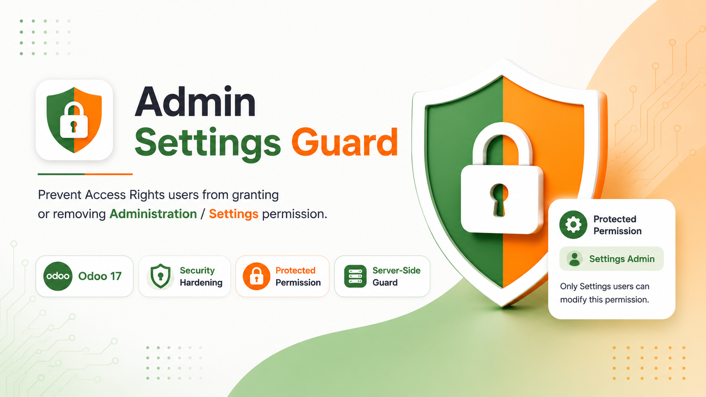

Stops Privilege Escalation
Access Rights users cannot promote themselves or another user to Administration / Settings access.
Server-Side Enforcement
Form saves, RPC/API writes, generated group fields, direct group writes, and implied groups are protected.
No Workflow Impact
Normal user and permission management stays available. Only the protected Settings permission is restricted.
Why This Module Is Needed
A user who can manage normal user permissions should not automatically be able to control the highest Settings-level administration permission. This module adds a clear server-side boundary between normal Access Rights management and sensitive Settings administration.
Access Rights users can still
- Create and edit regular users according to their access level.
- Manage normal group permissions outside the protected Settings group.
- Use existing Odoo user administration screens without custom external tools.
Access Rights users cannot
- Grant themselves Administration / Settings permission.
- Add Settings permission to another user.
- Remove or indirectly modify protected Settings membership through group changes.
Point-by-Point Feature Details
1. User Form Protection
- Generated user permission fields are checked during save.
- Administration / Settings permission is blocked for non-Settings users.
- Unauthorized changes show a clear access warning.
2. Direct Group Write Guard
- Direct res.users.groups_id updates are protected.
- RPC, import, custom code, and form writes pass through the same server rule.
- Protected Settings membership cannot be bypassed from backend writes.
3. Settings Group Membership
- Direct edit of the Administration / Settings group is checked.
- Only Settings-level users can grant or remove Settings access.
- Normal groups remain editable according to the user's rights.
4. Implied Group Protection
- Indirect permission escalation through implied groups is blocked.
- Groups cannot be adjusted to silently imply Settings access.
- The guard works consistently for visible and hidden permission switches.
How It Works
Access Rights User
Can manage normal users and standard permissions.
Sensitive Change
Tries to add, remove, or indirectly modify Administration / Settings access.
Server Guard
The request is blocked and Settings permission remains safe.
Demo Video
Watch the demo video to see how FP Admin Settings Guard protects the Administration / Settings permission from unauthorized Access Rights users.
Safety Notes
- This module protects only the sensitive Administration / Settings permission boundary.
- Authorized Settings users can still manage Settings permission normally.
- Normal user administration workflow remains available for Access Rights users.
- Protection is implemented server-side to reduce bypass risk from RPC, import, or custom writes.
FlowPro Soft
Odoo security, implementation, customization, and business automation support.